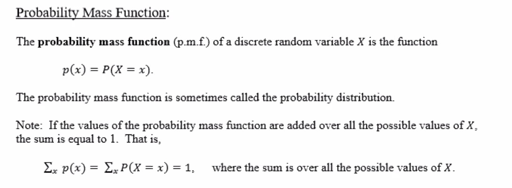
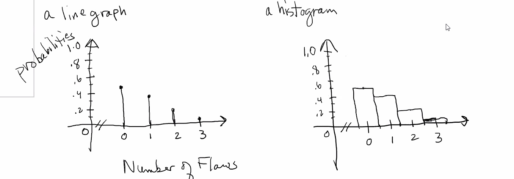
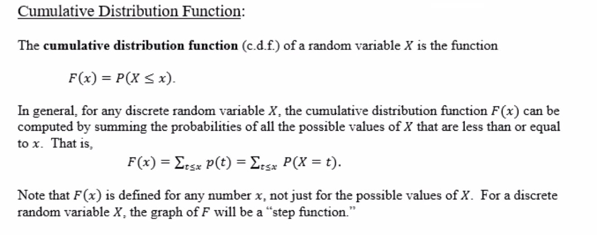
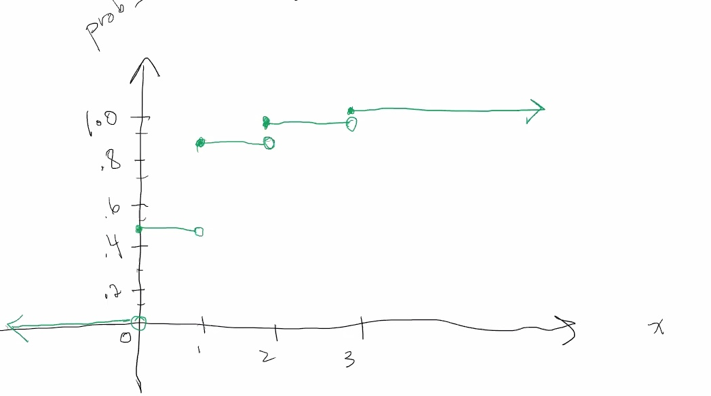

Annoucements
First exam will be in week 5
2.4 cont.
Stat50 2.4 Mean and Variance for Discrete Random Variables.pdf
Stat50 2.4 pmf and cdf for discrete RVs.pdf
Two important types of random variables:
- Discrete
- One whose possible values form a discrete set; that is values can be ordered and there are gaps between adjacent values
- Set of integers
- Set of whole numbers
- Usually involve a count of something
- Continuous
- Possible values always contain an interval; that is all the points between some two numbers.
- Usually involves a measurement of something
Discrete random variables

e.g.
The number of flaws in a 1-inch length of copper wire manufactured by a certain process varies from wire to wire. Overall, 48% of the wires produced have no flaws, 39% have 1 flaw, 12% have 2 flaws, and 1% have 3 flaws. Let X be the number of flaws in a randomly selected piece of wire.
The possible values of X are:
X={0,1,2,3}
The pmf is a table showing the possible values of X and their corresponding probabilities.
| Number of flaws x |
0 |
1 |
2 |
3 |
| Probability p(x) |
.48 |
.39 |
.12 |
.1 |
Note: the sum of the probabilities is 1.
∑xp(x)=1
Examples of some graphs for the above pmf:


The cdf for the above example.
Compute F(x) for each of the possible values of X below:
F(0)F(1)F(2)F(3)=P(X≤0)=p(0)=.48=P(X≤1)=p(0)+p(1)=.87=P(X≤2)=.48+.39+.12=.99=P(X≤3)=1
In table format:
| x |
p(x) |
F(x) |
| 0 |
.48 |
.48 |
| 1 |
.39 |
.87 |
| 2 |
.12 |
.99 |
| 3 |
.01 |
1 |
If you want to calculate numbers in between the given:
F(−1.4)F(0.5)F(.99)F(1.3)F(4)=P(X≤−1.4)=0=P(X≤0.5)=.48=P(X≤.99)=.48=P(X≤1.3)=.87=P(X≤4)=1
There is only a discrete amount of values for X so you must check what the probability X is less than what youre checking.
The cdf is a piecewise defined function:
F(x)=⎧⎩⎨⎪⎪⎪⎪00.480.870.991x<00≤x≤11<x≤22<x≤3x≥3
